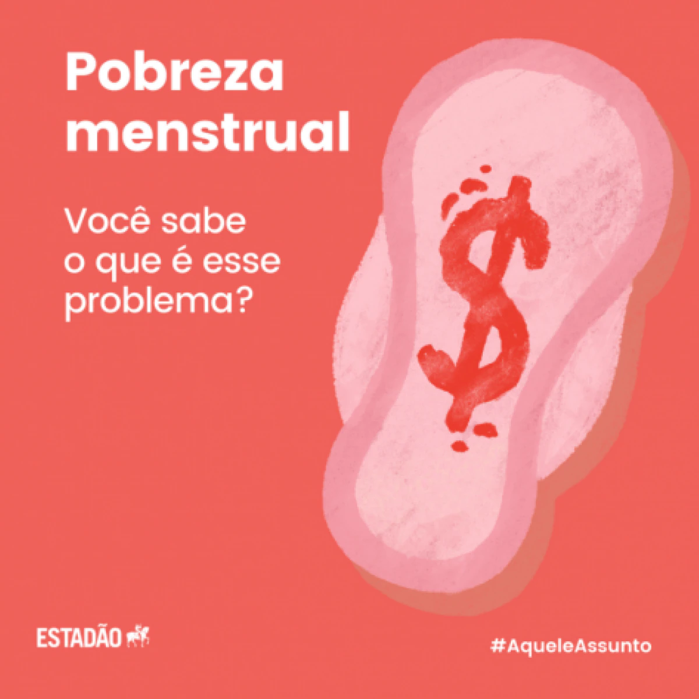

No Brasil aproximadamente 26% das mulheres sofrem o impacto da pobreza menstrual. A falta de acesso a absorventes, por exemplo, leva ao uso inapropriado de papéis, sacolas plásticas, meias e jornais, com consequente surgimento de vulvovaginites, infecções do trato urinário e outras complicações. A situação se agrava para presidiárias, refugiadas e moradoras de rua. Ademais, além de afetar a saúde física e psíquica de inúmeras pessoas, faz perdurar a desigualdade entre homens e mulheres. 10% das meninas não comparecem às aulas quando estão menstruadas. Neste mesmo contexto, sabe-se que o nosso país possui uma das mais elevadas taxações sobre absorventes no mundo, com tributação média de 25% do produto. Isto, somado à não distribuição de tais produtos e o descaso na criticidade da situação demonstram a importante de se debater a respeito. Com base na análise feita, é imprescindível dizer que a pobreza menstrual impacta negativamente na vida de milhares de mulheres no Brasil. Assim, este atual cenário evidencia a necessidade de mais políticas públicas de saúde para zelar pela dignidade humana da população feminina que sofre diariamente com a escassez de condições adequadas para o período menstrual
“Você é uma vergonha” e “mimimi”: ofensas a candidatas à presidência reproduzem falas de Bolsonaro
As candidatas à Presidência da República Simone Tebet (MDB) e Soraya Thronicke (União Brasil) foram alvo de 6.661 mil ofensas no Twitter em apenas dois dias. Expressões como “você é uma vergonha” aparecem em 1.050 tweets no levantamento do MonitorA, projeto desenvolvido por AzMina, InternetLab e Núcleo Jornalismo. Foram analisados quase 10 mil tweets que mencionaram as candidatas nos dias 28 (domingo) e 29 de agosto (segunda-feira).
VOCÊ SABIA
A Câmara dos Deputados aprovou nesta terça-feira (24/08/2021) o regime de urgência para dois projetos sobre dignidade menstrual. O primeiro deles (PL 4968/19), de autoria da deputada Marília Arraes (PT-PE) e outros 34 parlamentares, cria o Programa de Fornecimento de Absorventes Higiênicos (PFAH) nas escolas públicas de ensino médio e de anos finais do ensino fundamental. Pela bancada feminina, outras seis deputadas assinam como coautoras. Outro projeto, o PL 1999/21, da deputada Tabata Amaral (PDT-SP) e dois deputados, inclui dispositivo na LDB para considerar como despesa com manutenção e desenvolvimento do ensino a compra de absorventes higiênicos e outros produtos de limpeza e segurança sanitária.
A menstruação não é só coisa de mulher!
A menstruação é uma função biológica do nosso corpo que não está relacionada ao gênero da pessoa. Então nem todas as mulheres menstruam e nem toda pessoa que menstrua é uma mulher. Vamos fazer uma análise detalhada para entender melhor:
Não binário – algumas pessoas não percebem que a palavra “mulher” ou “homem” se encaixa na maneira como se sentem. Dessa forma, elas podem se sentir como os dois ao mesmo tempo ou nenhum dos dois. E, de modo geral, se elas tiverem útero, elas também podem menstruar.
Intersexo – são pessoas nascidas com características sexuais (tipo cromossomos, genitálias e tal) que não se encaixam na definição binária típica de menino ou menina. E isso não é tão incomum, viu? Cerca de 1,7% da população nasce com características intersexuais, ou seja, é algo quase tão comum quanto nascer com cabelos ruivos. E sim, pode ser que a pessoa intersexo também menstrue, tá?
Cisgênero – pessoas cis se identificam com o sexo que foram designadas no nascimento. Se o médico lhe atribuiu o sexo feminino e você se sente como uma garota ou mulher, então você é uma pessoa cis. E como todo mundo já sabe, a maioria das mulheres cis lida com a menstruação todo mês.
Transgênero: a pessoa trans têm uma identidade de gênero diferente da que foi originalmente atribuída no nascimento. Por exemplo, quando você nasceu seu médico viu que você tinha uma vagina e, o sexo “feminino” foi automaticamente adicionado à sua certidão de nascimento.
Contudo, a pessoa trans se sente e se identifica com um gênero diferente do que as informações da certidão de nascimento indicam. Sendo assim, uma pessoa que foi designada ao nascer como mulher pode se identificar como um homem trans, por exemplo. Ah! E se a pessoa trans tiver útero, ela também pode menstruar sim.
Por isso, para não deixar ninguém de fora, é bem importante a gente ampliar os diálogos sobre menstruação para muito além dos gêneros.
Notícias
clique para saber mais
Para fazer uma doação siga os seguintes passos
Para receber doações você deverá responder as seguintes perguntas